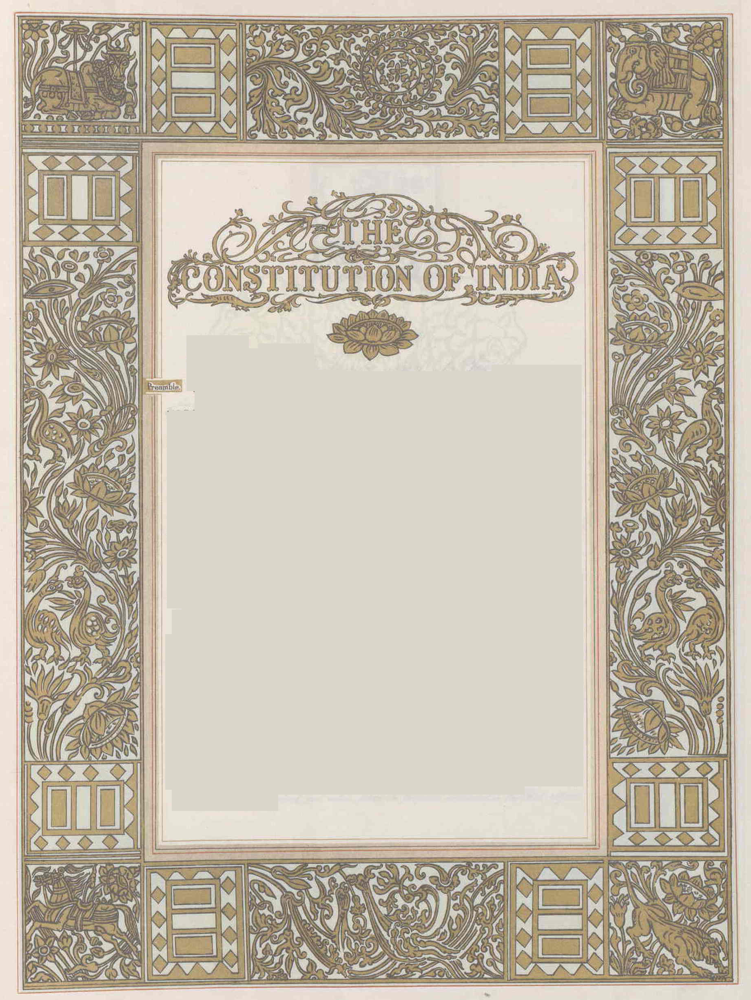

69th BPSC PYQ42nd Amendment & the Preamble (69th, Q104-class): BPSC tested that the 42nd Amendment (1976) added three words to the Preamble — 'Socialist', 'Secular' and 'Integrity' — the only amendment ever made to it. Also tested: the 42nd added Fundamental Duties and new DPSPs (Art 43A, 48A). Expect a repeat on either the three words or on the source of the Preamble (Objectives Resolution, 13 Dec 1946, Nehru).
BPSC PatternIs the Preamble part of the Constitution? BPSC-style multi-statement traps revolve around: Preamble is NOT enforceable in courts (non-justiciable); it IS a part of the Constitution (Kesavananda, 1973); it can be amended without touching the "basic structure" (42nd Amendment precedent, upheld in Kesavananda itself). Also memorise: 1949 adoption text vs today's text — three words added, one date reference unchanged ("this twenty-sixth day of November, 1949").

The original calligraphed and illuminated Preamble page of the Constitution of India — "WE, THE PEOPLE OF INDIA…" is the opening.
The full text — parse it keyword by keyword
"WE, THE PEOPLE OF INDIA" — popular sovereignty: the Constitution derives authority from the people, not from Parliament or the Crown. (Trap: "We, the people" ≠ "We, the representatives".)
"having solemnly resolved to constitute India into a SOVEREIGN SOCIALIST SECULAR DEMOCRATIC REPUBLIC" — five descriptors of the Indian state, each with a distinct source and case law (see table below).
"and to secure to all its citizens: JUSTICE, social, economic and political; LIBERTY of thought, expression, belief, faith and worship; EQUALITY of status and of opportunity; and to promote among them all FRATERNITY assuring the dignity of the individual and the unity and integrity of the Nation;"
"IN OUR CONSTITUENT ASSEMBLY this twenty-sixth day of November, 1949, do HEREBY ADOPT, ENACT AND GIVE TO OURSELVES THIS CONSTITUTION."
The five descriptors — what each really means
Keyword
Meaning
Exam anchor
Sovereign
India is neither a dependency nor a dominion; free to conduct internal & external affairs; can acquire/cede territory
Popular sovereignty via universal adult franchise; republican form; independent Election machinery
Art 326 universal adult suffrage from 26 Jan 1950 — a world first at this scale
Republic
Elected head of state (President), not hereditary; elected for a fixed term
Contrast Britain (monarchy) — borrowed republican ideal from France
The four objectives — sources and pairings
Objective
Components (exact order)
Source inspiration
Justice
Social, Economic, Political
USSR (Russian Revolution ideals)
Liberty
Thought, Expression, Belief, Faith, Worship
French Revolution (liberty)
Equality
Status, Opportunity
French Revolution (égalité)
Fraternity
Dignity of the individual; Unity & Integrity of the Nation
French Revolution (fraternité); "integrity" added 1976
Mnemonic — JLEF ladder:Justice → Liberty → Equality → Fraternity, in the exact constitutional order. Justice has 3 arms (S-E-P), Liberty has 5 (T-E-B-F-W). Remember: "Justice is Soviet, Liberty-Equality-Fraternity are French."
Key interpretational milestones — case-law flow
Berubari Union (1960): Preamble NOT part of Constitution; it is a key to the makers' minds
Kesavananda Bharati (1973): Preamble IS part of the Constitution; it CAN be amended (proviso to Art 368), without altering the basic structure
42nd Amendment (1976): adds Socialist, Secular, Integrity — the ONLY amendment so far; does not alter adoption date 26 Nov 1949
LIC of India (1995): reaffirms — Preamble is part of the Constitution
Balram Singh v. Union of India (Nov 2024): SC refuses to delete "socialist"/"secular" — 42nd words stay; Preamble remains amendable but basic structure intact
📖 Deep dive: For word-by-word legal semantics of every Preamble term, the five-step case-law ladder (Berubari → Kesavananda → 42nd → LIC → Balram 2024), the enforceability matrix, and 7 exam predictions — see Topic 39 Deep Dive: Preamble Semantics, Case Law & Exam Predictions.
⚡ Fact Matrix — Quick Revision
Fact
Answer
Trap
Preamble's source
Objectives Resolution (Nehru, 13 Dec 1946; adopted 22 Jan 1947)
"British Act" / "GoI Act 1935" are wrong
Words added by 42nd Amendment
Socialist, Secular, Integrity (1976)
"Democratic" and "Republic" were there from 1949
Is Preamble justiciable?
Non-justiciable — not enforceable in courts
Being part of the Constitution ≠ enforceability
Can it be amended?
Yes (proviso to Art 368; Kesavananda), without altering basic structure
"Preamble can never be amended" is wrong
Self-contained?
Neither a source of power to legislature nor a limitation
Not "source of all powers" — that's the trap
N.C. Kelkar / famous quote
"Preamble is the soul of the Constitution" — Thakurdas Bhargava called it "the horoscope of our sovereign democratic republic"; K.M. Munshi: "political horoscope"; Ernest Barker placed it at his book's opening
Attribute quotes correctly
Adoption date in the text
26 November 1949 — unchanged since adoption
NOT 26 January 1950
The calligraphed title page of the original Constitution — the document opens with the Preamble ("WE, THE PEOPLE OF INDIA…"), hand-written and illuminated by artists of Santiniketan.
Bihar Connection 🔗
Dr. Rajendra Prasad (Siwan, Bihar) — permanent President of the Constituent Assembly that adopted the Preamble-wording Constitution; as first President of India he signed the Constitution into operation on 26 Jan 1950. BPSC often pairs the Preamble with "who presided over adoption".
Anugrah Narayan Sinha & Bihar's CA members voted on the Objectives Resolution-inspired text; Bihar's provincial sentiment ("justice, social & economic") maps to the state's later zamindari-abolition politics (1950 — one of the earliest states to abolish zamindari, operationalising "economic justice").
Equality & Bihar's movements: Champaran (1917, Topic 32) and the Bihar Scheduled Castes' struggle (Topic 17's Karpoori Thakur legacy) exemplify "equality of status" — a favourite BPSC essay-hook linking Preamble values to Bihar history.
Secularism in Bihar: the state's Sufi tradition (Topic 139: Maner Sharif, Phulwari Sharif) and Buddhist-Jain heritage (Topic 101: Bodh Gaya, Pawapuri) provide the "positive secularism" examples BPSC likes as distractors/illustrations.
Cross-Topic Connections: Making of the Constitution & Objectives Resolution → 38; Fundamental Rights (equality code Arts 14–18) → 40; DPSP (justice ideals, Part IV ↔ Preamble's justice) → 41; 42nd Amendment's other changes → 49; Basic structure & amendments → 49; Bihar's polity values → 143.
🆕 Current Relevance 2024–26
SC judgment (Nov 2024):Balram Singh v. UOI — petition to delete "socialist" & "secular" from the Preamble dismissed; CJI Chandrachud's bench held the amendment power extends to the Preamble and 42nd Amendment words stay. Directly examinable.
75 years of the Constitution (26 Nov 2024): year-long commemorations ("Hamra Samvidhan Hamra Swabhiman" in states incl. Bihar); the Preamble's reading in schools is a linked ritual — expect an anniversary-anchored question.
Preamble reading controversies: some state assemblies/NCERT debates over dropping "socialist/secular" in readings — the SC's 2024 ruling is the definitive position for the exam.
"Socialistic" interpretation refresh: recent SC rulings on welfare-scheme economics continue the D.S. Nakara line — socialism in the Preamble = welfare state, not a particular economic policy.
✍️ MCQ Practice Set — 25 Questions (BPSC Level)
Q1. The Preamble of the Constitution of India is based on:
✅ Correct Answer: (C) — The Preamble is based on the Objectives Resolution, moved by Nehru on 13 Dec 1946 and adopted 22 Jan 1947. The GoI Act 1935 supplied administrative machinery (not ideals); the Nehru Report (1928) proposed dominion status; the Cabinet Mission created the Assembly, not the Preamble.
Q2. The words 'Socialist', 'Secular' and 'Integrity' were added to the Preamble by which amendment?
✅ Correct Answer: (B) — The 42nd Amendment (1976) — the "Mini-Constitution" — added all three words; it remains the only amendment ever made to the Preamble. The 44th (1978) reversed several 42nd changes but left the Preamble untouched. The 52nd is anti-defection; the 24th clarified amendability of FRs.
Q3. In the Berubari Union case (1960), the Supreme Court held that the Preamble:
✅ Correct Answer: (A) — Berubari (1960): the Preamble is not a part of the Constitution; it is a key to the makers' minds. This was overruled in Kesavananda (1973), which made it a part. Option C is wrong in both cases; option D was never held — the Preamble is non-justiciable.
Q4. In Kesavananda Bharati v. State of Kerala (1973), the Supreme Court held that:
✅ Correct Answer: (A) — Kesavananda held the Preamble IS part of the Constitution and CAN be amended (Art 368's proviso applies), but the basic structure — which the Preamble's ideals define — cannot be destroyed. Option A is Berubari (1960); option D is nonsense — the Preamble is non-justiciable and cannot override anything.
Q5. Which of the following pairs is correctly matched? (Preamble element — Interpretation)
✅ Correct Answer: (B) — Secularism here is positive secularism (Sarva Dharma Samabhava) — the State has no official religion and treats all equally (S.R. Bommai, 1994). Option A is wrong: Indian socialism is democratic socialism (mixed economy), not communism. Option C: a republic has an elected head. Option D: sovereignty means free of external control — Commonwealth membership (1949 London Declaration) does not limit it.
Q6. The correct chronological order of ideals as they appear in the Preamble is:
Q7. 'Liberty of thought, expression, belief, faith and worship' in the Preamble is reflected in which set of Fundamental Rights?
✅ Correct Answer: (D) — Liberty of thought/expression → Art 19 (speech etc.) and Art 21 (life & personal liberty, Art 20-22 cluster); belief/faith/worship → Arts 25–28 (freedom of religion). Arts 14–18 embody equality; Arts 29–30 cultural/educational rights; Arts 23–24 abolition of exploitation.
Q8. The phrase 'economic justice' in the Preamble is primarily reflected in:
✅ Correct Answer: (C) — Economic and social justice is the domain of DPSP (Part IV) — L.M. Singhvi's view; the SC in D.S. Nakara (1982) and earlier cases linked Preamble's economic justice to DPSPs (e.g., Art 39). FRs secure political justice primarily (and civil equality); Part IVA is duties; Part XII is financial administration.
Q9. Consider the following statements about the Preamble: 1. It is non-justiciable — not enforceable in a court of law. 2. It is a legitimate aid in interpreting ambiguous provisions of the Constitution. 3. It was amended once, by the 42nd Amendment, 1976. Which is/are correct?
✅ Correct Answer: (B) — All three are correct. Non-justiciable but a valid interpretive aid (used in Kesavananda, Bommai); amended once only (42nd, 1976 — Socialist, Secular, Integrity). BPSC's multi-statement pattern usually tests the justiciability + interpretive-aid combination.
Q10. The Preamble declares India to be:
✅ Correct Answer: (B) — Today's text: "SOVEREIGN SOCIALIST SECULAR DEMOCRATIC REPUBLIC" — the five descriptors in order. Option A is the 1949–1976 text (without Socialist/Secular). Option D inserts "Federal" — the Preamble does not use the word "federal" (India is a "Union of States", Art 1).
Q11. The ideal of 'Justice — social, economic, political' in the Preamble is inspired by:
✅ Correct Answer: (C) — The ideal of justice (social, economic, political) comes from the Russian Revolution. Liberty, equality, fraternity come from the French Revolution. The Irish gave DPSP (whose justice ideals are distinct from the Preamble's justice line). US gave FRs/judicial review.
Q12. 'Fraternity' in the Preamble means:
✅ Correct Answer: (A) — Fraternity assures the dignity of the individual and the unity and integrity of the Nation ("integrity" added by the 42nd). Option C is economic justice/equality; option D is liberty of faith/worship. Fraternity promotes the feeling of common brotherhood — Art 51A(e) (duty to promote harmony) is its statutory echo.
Q13. In November 2024, the Supreme Court (in Balram Singh v. Union of India) held that:
✅ Correct Answer: (B) — The SC dismissed the petition to delete "socialist"/"secular": Parliament's Art 368 power extends to the Preamble (42nd Amendment precedent; Kesavananda), and the insertion stands. Option C contradicts Kesavananda; option D is wrong — ordinary Art 368 procedure applies.
Q14. The Preamble states that the Constitution was adopted 'in our Constituent Assembly' on:
✅ Correct Answer: (C) — The Preamble's final line records adoption on "this twenty-sixth day of November, 1949" — unchanged even after the 42nd Amendment. 26 Jan 1950 is commencement; 9 Dec 1946 is the first sitting. The adoption/commencement distinction is a BPSC staple.
Q15. Which of the following is NOT a descriptor used for India in the Preamble?
✅ Correct Answer: (D) — The Preamble does not describe India as "federal" (Art 1: "Union of States"; the country is federal in structure but the word is absent — Dr. Ambedkar's deliberate choice). Socialist/Secular (42nd), Republic (from 1949) all appear.
Q16. Match List-I (Preamble term) with List-II (closest constitutional embodiment):
(a) Justice, social (b) Liberty of worship (c) Equality of opportunity (d) Fraternity 1) Art 25 2) Art 15(4) special provisions 3) Art 46 promotion of educational & economic interests of weaker sections 4) Art 51A(e) harmony & common brotherhood
✅ Correct Answer: (D) — Justice-social → Art 46 (weaker sections); liberty of worship → Art 25 (freedom of conscience); equality of opportunity → Art 15(4)/16(4) special provisions; fraternity → Art 51A(e). Matching Preamble ideals to specific Articles is a high-yield BPSC pattern (71st used similar pairs).
Q17. Which of the following statements is INCORRECT about the Preamble?
✅ Correct Answer: (D) — The Preamble is non-justiciable — no one can enforce it in court; it is interpretive material only. (A) is right post-Kesavananda; (C) is right (42nd Amendment precedent); (D) is right — the SC uses it to identify basic-structure elements (e.g., secularism in Bommai).
Q18. The Preamble's phrase 'We, the people of India' signifies:
✅ Correct Answer: (B) — "We, the people" proclaims popular sovereignty: the Constitution derives from the people (political sovereignty). There was no referendum (option C) and the Assembly was indirectly elected (option D — the classic CA trap, see Topic 38).
Q19. Thakurdas Bhargava described the Preamble as:
✅ Correct Answer: (C) — Thakurdas Bhargava: "the horoscope of our sovereign democratic republic"; K.M. Munshi: "political horoscope". N.A. Palkhivala called it the "identity card of the Constitution" (option B); "soul of the Constitution" is variously attributed to Thakurdas Bhargava too, but the tested pairing is horoscope→Bhargava.
Q20. Consider the following pairs (word added — amendment): 1. Socialist — 42nd 2. Secular — 42nd 3. Integrity — 44th 4. Democratic — 42nd Which are correctly matched?
✅ Correct Answer: (D) — Socialist, Secular AND Integrity were ALL added by the 42nd Amendment (1976) — pair 3 is wrong (44th did not touch the Preamble); pair 4 is wrong because "Democratic" was in the original 1949 text, not added by any amendment.
Q21. The Preamble is silent on which of the following?
✅ Correct Answer: (A) — The Preamble mentions the adoption date (26 Nov 1949), NOT the commencement date (26 Jan 1950). Source of authority (We the people), nature of State (five descriptors) and objectives (JLEF) are all there.
Q22. In S.R. Bommai v. Union of India (1994), the Supreme Court held that secularism:
✅ Correct Answer: (A) — Bommai (1994): secularism is a basic feature; a State government's misuse of religion can invite Art 356 action. "Secular" entered the Preamble in 1976 (42nd), not 1994. Indian secularism = positive/equal respect, NOT anti-religion; it binds both Union and States.
Q23. Which pair is NOT correctly matched? (Preamble ideal — Source of inspiration)
✅ Correct Answer: (A) — Fraternity comes from the French Revolution (fraternité), not the Russian. Justice (social-economic-political) is the Russian contribution; liberty and equality are French. The three-way France/Russia/Ireland sourcing is a repeated BPSC theme.
Q24. The 42nd Amendment is called the 'Mini-Constitution' because it: 1. Added words to the Preamble 2. Added Fundamental Duties (Part IVA) 3. Added new Directive Principles (Arts 43A, 48A) 4. Curtailed judicial review
✅ Correct Answer: (A) — All four: Preamble words (Socialist/Secular/Integrity), Fundamental Duties (Art 51A, on USSR lines), new DPSPs (43A worker participation, 48A environment), and curtailment of judicial review (Art 368(4)(5), tribunals, Art 31C widened) — hence "Mini-Constitution". The 44th (1978) reversed only parts (e.g., property right).
Q25. 'Equality of status and of opportunity' in the Preamble corresponds most closely to which constitutional provision?
✅ Correct Answer: (C) — Equality of status → Arts 14–15 (equal protection, non-discrimination); equality of opportunity → Art 16 (public employment) and DPSP Art 39 (equal pay, resources). Art 21 is liberty; Art 32 is remedies; Art 51A is duties. Preamble-to-Article mapping is exactly how BPSC frames "embodiment" questions.